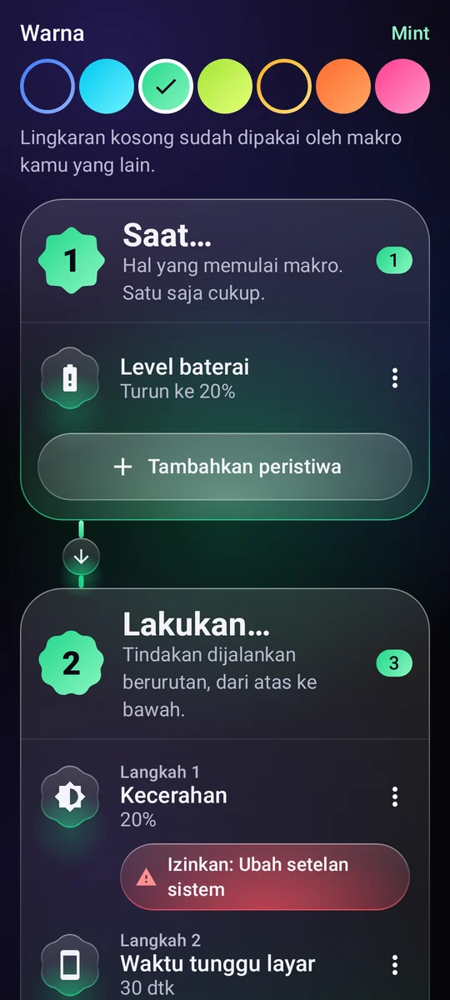
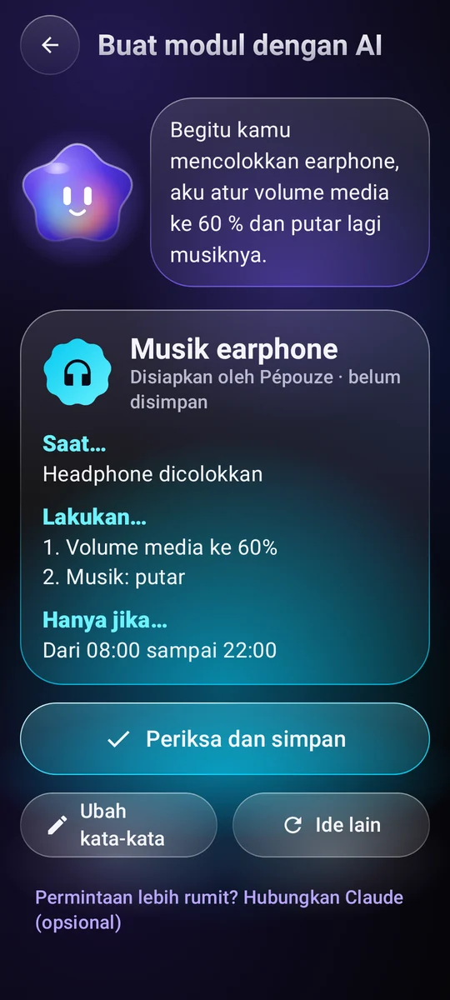
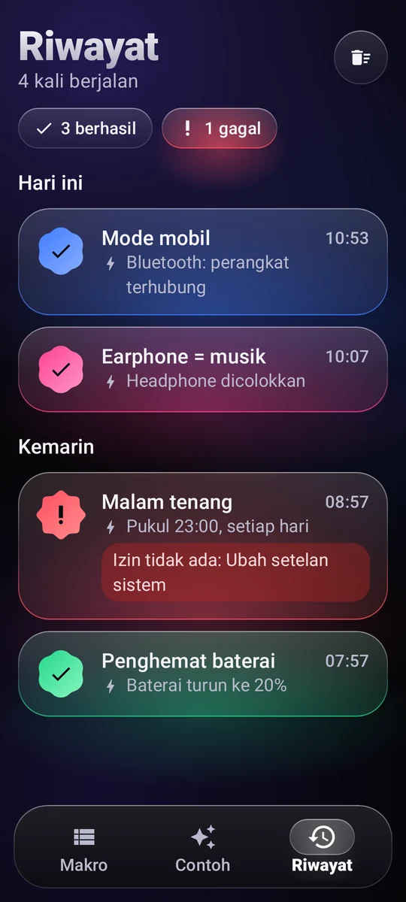

Pemicu makro
Jam dan hari, Wi-Fi, Bluetooth, earphone, pengisi daya, level baterai, layar menyala, aplikasi yang dibuka…
11 pemicuOtomatisasi untuk Android
Tulis satu aturan sederhana, “Saat… Lakukan…”, dan ponsel Anda mengurusnya sendiri, tepat pada waktunya.
Cara kerjanya
Setiap makro cukup satu kalimat. Anda menyusunnya dari tiga blok, tanpa perlu memprogram apa pun.
Jam dan hari, Wi-Fi, Bluetooth, earphone, pengisi daya, level baterai, layar menyala, aplikasi yang dibuka…
11 pemicuVolume, nada dering, Jangan Ganggu, kecerahan, senter, musik, alarm, timer, notifikasi, membacakan teks, membuka aplikasi atau tautan, mengetuk teks di layar…
29 tindakan untuk dipadukanRentang waktu, hari dalam seminggu, level baterai, ponsel sedang diisi daya.

Contoh
Salin contohnya, sesuaikan, dan beres. Ini beberapa di antaranya.
Begitu Bluetooth mobil tersambung, volume naik dan musik kembali diputar.
Pukul 23.00, Jangan Ganggu aktif, kecerahan turun ke minimum, dan musik berhenti.
Saat baterai di bawah 20%, layar meredup dan lebih cepat masuk mode tidur.
Saat Anda mencolokkan earphone, musik mulai diputar dengan volume lembut.
Pagi hari, saat pengisi daya dicabut, ponsel menyebutkan jam dan level baterai.
Minggu sampai Kamis pukul 22.30, pengingat lembut untuk meletakkan ponsel, dan layar meredup.

Pépouze, asisten Anda
Jelaskan keinginan Anda dalam satu kalimat. Pépouze menyiapkan makronya, Anda memeriksanya, lalu menyimpannya.
Anda“Saat earphone saya dicolokkan, putar musik di 60%”
Bagikan dan jalankan
Bertukar ide dengan komunitas, dan jalankan makro Anda tanpa perlu membuka aplikasi.
Perpustakaan makro yang dibagikan oleh pengguna. Salin yang Anda suka, terbitkan milik Anda sendiri. Lihat komunitas
Tunjukkan ke teman, masukkan ke video: kamera apa pun bisa membukanya, dan Pépouze mengimpornya.
Widget di layar utama, ubin di setelan cepat, atau pintasan: makro langsung berjalan.
Pépouze berbicara 13 bahasa dan memahami permintaan Anda langsung di ponsel.
Anda tetap memegang kendali
Setiap eksekusi dicatat, berhasil atau tidak, beserta pemicunya.
Izin hanya diminta ketika sebuah makro membutuhkannya, lengkap dengan penjelasannya.
Di Google Drive atau di ponsel, tanpa akun. Atau online, dengan akun.
Makro Anda ada di ponsel Anda. Tanpa analitik pengunjung, tak ada data yang dijual.

Harga
Tanpa iklan, tanpa langganan, tanpa jebakan: Pépouze adalah proyek independen.
€0
Pertanyaan
Hanya untuk hal-hal yang Anda tambahkan ke makro: mengetuk teks di layar, menekan Kembali atau Beranda, mengunci layar, mengambil tangkapan layar, mengetahui aplikasi mana yang dibuka.
Teks di layar hanya dibaca untuk menemukan teks yang harus diketuk, dan tidak ada yang keluar dari ponsel. Pépouze hanya bertindak sesuai aturan yang Anda tulis. Layanan ini hanya aktif dengan persetujuan Anda, setelah penjelasan khusus, dan Anda bisa mematikannya kapan saja.
Tidak. Akun hanya dipakai untuk mencadangkan makro Anda secara online. Anda juga bisa mencadangkannya ke file, di Google Drive atau di ponsel, tanpa akun sama sekali.
Ya, sebagian besar: Pépouze memantau peristiwa di latar belakang. Agar Android tidak menidurkannya, pilih “Baterai: tidak dibatasi” di halaman info aplikasi pada setelan Android. Tindakan yang menyentuh layar membutuhkan ponsel yang tidak terkunci.
Tidak. Tindakan “Siapkan SMS” membuka aplikasi pesan Anda dengan nomor dan teks yang sudah siap: Anda sendiri yang mengetuk Kirim.
Di aplikasi: Akun saya → Hapus akun saya. Tanpa aplikasi, buka halaman penghapusan akun.
Gratis di Android, tanpa iklan.
Pépouze segera hadir. Coba lebih dulu: kirim pesan kepada kami, kami kirimkan undangannya.